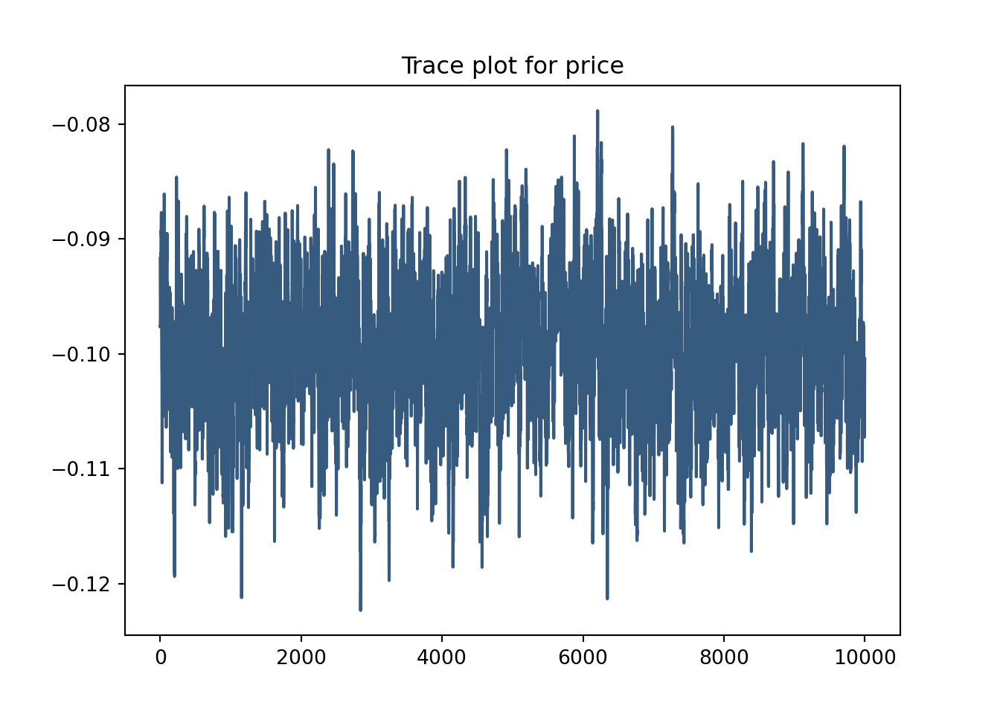
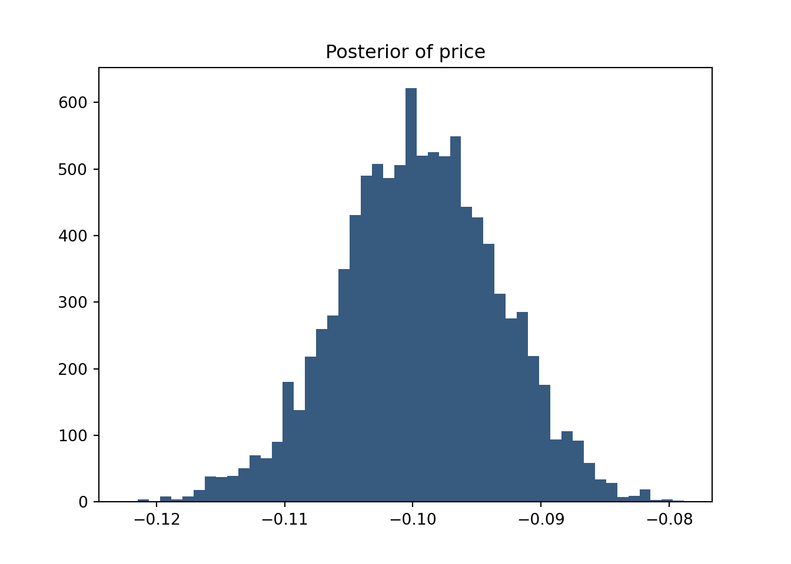

# set seed for reproducibility
set.seed(123)
# define attributes
brand <- c("N", "P", "H") # Netflix, Prime, Hulu
ad <- c("Yes", "No")
price <- seq(8, 32, by=4)
# generate all possible profiles
profiles <- expand.grid(
brand = brand,
ad = ad,
price = price
)
m <- nrow(profiles)
# assign part-worth utilities (true parameters)
b_util <- c(N = 1.0, P = 0.5, H = 0)
a_util <- c(Yes = -0.8, No = 0.0)
p_util <- function(p) -0.1 * p
# number of respondents, choice tasks, and alternatives per task
n_peeps <- 100
n_tasks <- 10
n_alts <- 3
# function to simulate one respondent’s data
sim_one <- function(id) {
datlist <- list()
# loop over choice tasks
for (t in 1:n_tasks) {
# randomly sample 3 alts (better practice would be to use a design)
dat <- cbind(resp=id, task=t, profiles[sample(m, size=n_alts), ])
# compute deterministic portion of utility
dat$v <- b_util[dat$brand] + a_util[dat$ad] + p_util(dat$price) |> round(10)
# add Gumbel noise (Type I extreme value)
dat$e <- -log(-log(runif(n_alts)))
dat$u <- dat$v + dat$e
# identify chosen alternative
dat$choice <- as.integer(dat$u == max(dat$u))
# store task
datlist[[t]] <- dat
}
# combine all tasks for one respondent
do.call(rbind, datlist)
}
# simulate data for all respondents
conjoint_data <- do.call(rbind, lapply(1:n_peeps, sim_one))
# remove values unobservable to the researcher
conjoint_data <- conjoint_data[ , c("resp", "task", "brand", "ad", "price", "choice")]
# clean up
rm(list=setdiff(ls(), "conjoint_data"))Multinomial Logit Model
School
MGTA495
This assignment explores two methods for estimating the MNL model: (1) via Maximum Likelihood, and (2) via a Bayesian approach using a Metropolis-Hastings MCMC algorithm.
1. Likelihood for the Multi-nomial Logit (MNL) Model
Suppose we have \(i=1,\ldots,n\) consumers who each select exactly one product \(j\) from a set of \(J\) products. The outcome variable is the identity of the product chosen \(y_i \in \{1, \ldots, J\}\) or equivalently a vector of \(J-1\) zeros and \(1\) one, where the \(1\) indicates the selected product. For example, if the third product was chosen out of 3 products, then either \(y=3\) or \(y=(0,0,1)\) depending on how we want to represent it. Suppose also that we have a vector of data on each product \(x_j\) (eg, brand, price, etc.).
We model the consumer’s decision as the selection of the product that provides the most utility, and we’ll specify the utility function as a linear function of the product characteristics:
\[ U_{ij} = x_j'\beta + \epsilon_{ij} \]
where \(\epsilon_{ij}\) is an i.i.d. extreme value error term.
The choice of the i.i.d. extreme value error term leads to a closed-form expression for the probability that consumer \(i\) chooses product \(j\):
\[ \mathbb{P}_i(j) = \frac{e^{x_j'\beta}}{\sum_{k=1}^Je^{x_k'\beta}} \]
For example, if there are 3 products, the probability that consumer \(i\) chooses product 3 is:
\[ \mathbb{P}_i(3) = \frac{e^{x_3'\beta}}{e^{x_1'\beta} + e^{x_2'\beta} + e^{x_3'\beta}} \]
A clever way to write the individual likelihood function for consumer \(i\) is the product of the \(J\) probabilities, each raised to the power of an indicator variable (\(\delta_{ij}\)) that indicates the chosen product:
\[ L_i(\beta) = \prod_{j=1}^J \mathbb{P}_i(j)^{\delta_{ij}} = \mathbb{P}_i(1)^{\delta_{i1}} \times \ldots \times \mathbb{P}_i(J)^{\delta_{iJ}}\]
Notice that if the consumer selected product \(j=3\), then \(\delta_{i3}=1\) while \(\delta_{i1}=\delta_{i2}=0\) and the likelihood is:
\[ L_i(\beta) = \mathbb{P}_i(1)^0 \times \mathbb{P}_i(2)^0 \times \mathbb{P}_i(3)^1 = \mathbb{P}_i(3) = \frac{e^{x_3'\beta}}{\sum_{k=1}^3e^{x_k'\beta}} \]
The joint likelihood (across all consumers) is the product of the \(n\) individual likelihoods:
\[ L_n(\beta) = \prod_{i=1}^n L_i(\beta) = \prod_{i=1}^n \prod_{j=1}^J \mathbb{P}_i(j)^{\delta_{ij}} \]
And the joint log-likelihood function is:
\[ \ell_n(\beta) = \sum_{i=1}^n \sum_{j=1}^J \delta_{ij} \log(\mathbb{P}_i(j)) \]
2. Simulate Conjoint Data
We will simulate data from a conjoint experiment about video content streaming services. We elect to simulate 100 respondents, each completing 10 choice tasks, where they choose from three alternatives per task. For simplicity, there is not a “no choice” option; each simulated respondent must select one of the 3 alternatives.
Each alternative is a hypothetical streaming offer consistent of three attributes: (1) brand is either Netflix, Amazon Prime, or Hulu; (2) ads can either be part of the experience, or it can be ad-free, and (3) price per month ranges from $4 to $32 in increments of $4.
The part-worths (ie, preference weights or beta parameters) for the attribute levels will be 1.0 for Netflix, 0.5 for Amazon Prime (with 0 for Hulu as the reference brand); -0.8 for included adverstisements (0 for ad-free); and -0.1*price so that utility to consumer \(i\) for hypothethical streaming service \(j\) is
\[ u_{ij} = (1 \times Netflix_j) + (0.5 \times Prime_j) + (-0.8*Ads_j) - 0.1\times Price_j + \varepsilon_{ij} \]
where the variables are binary indicators and \(\varepsilon\) is Type 1 Extreme Value (ie, Gumble) distributed.
The following code provides the simulation of the conjoint data.
3. Preparing the Data for Estimation
The “hard part” of the MNL likelihood function is organizing the data, as we need to keep track of 3 dimensions (consumer \(i\), covariate \(k\), and product \(j\)) instead of the typical 2 dimensions for cross-sectional regression models (consumer \(i\) and covariate \(k\)). The fact that each task for each respondent has the same number of alternatives (3) helps. In addition, we need to convert the categorical variables for brand and ads into binary variables.
import pandas as pd
import numpy as np
import math
from scipy.optimize import minimize
from scipy.stats import norm
import matplotlib.pyplot as plt
from cycler import cycler
df = pd.read_csv('data/conjoint_data.csv')
dfe = pd.get_dummies(df, columns=['brand'], drop_first=True)
dfe['ad'] = dfe['ad'] == 'Yes'4. Estimation via Maximum Likelihood
ci = 0.95
X = dfe[['brand_N', 'brand_P', 'ad', 'price']].values
y = dfe['choice'].values
groups = (dfe['resp'].astype(str) + '-' + dfe['task'].astype(str)).factorize()[0]
def log_likelihood(beta, X, y, groups):
ll = 0.0
for g in np.unique(groups):
idx = groups == g
Xg = X[idx]
yg = y[idx]
U = np.dot(Xg, beta)
maxU = max(U)
expU = [math.exp(u - maxU) for u in U]
denom = sum(expU)
probs = [eu / denom for eu in expU]
chosen_idx = np.argmax(yg)
ll += math.log(probs[chosen_idx])
return -ll
init_beta = np.zeros(X.shape[1])
res = minimize(log_likelihood, init_beta, args=(X, y, groups), method='BFGS')
beta_hat = res.x
hessian_inv = res.hess_inv
se = np.sqrt(np.diag(hessian_inv))
z = norm.ppf(1-((1-ci)/2))
ci_lower = beta_hat - z * se
ci_upper = beta_hat + z * se
for name, b, s, low, high in zip(['brand_N', 'brand_P', 'ad', 'price'], beta_hat, se, ci_lower, ci_upper):
print(f'{name}: {b:.4f} ± {z * s:.4f} → CI: [{low:.4f}, {high:.4f}]')brand_N: 0.9412 ± 0.0395 → CI: [0.9017, 0.9807]
brand_P: 0.5016 ± 0.0210 → CI: [0.4806, 0.5226]
ad: -0.7320 ± 0.0117 → CI: [-0.7437, -0.7203]
price: -0.0995 ± 0.0120 → CI: [-0.1115, -0.0875]5. Estimation via Bayesian Methods
def log_prior(beta):
lp = 0.0
lp += sum(norm.logpdf(beta[:3], loc=0, scale=np.sqrt(5))) # binary variables
lp += norm.logpdf(beta[3], loc=0, scale=1) # price
return lp
def log_posterior(beta, X, y, groups):
return -log_likelihood(beta, X, y, groups) + log_prior(beta)
n_draws = 11000
beta_draws = np.zeros((n_draws, 4))
beta_current = np.zeros(4)
logp_current = log_posterior(beta_current, X, y, groups)
proposal_sd = np.array([0.05, 0.05, 0.05, 0.005])
for i in range(n_draws):
proposal = beta_current + np.random.normal(0, proposal_sd)
logp_proposal = log_posterior(proposal, X, y, groups)
accept_prob = np.exp(logp_proposal - logp_current)
if np.random.rand() < accept_prob:
beta_current = proposal
logp_current = logp_proposal
beta_draws[i, :] = beta_current
beta_posterior = beta_draws[1000:]
means = beta_posterior.mean(axis=0)
sds = beta_posterior.std(axis=0)
ci_lower = np.percentile(beta_posterior, 2.5, axis=0)
ci_upper = np.percentile(beta_posterior, 97.5, axis=0)
for name, m, s, lo, hi in zip(['brand_N', 'brand_P', 'ad', 'price'], means, sds, ci_lower, ci_upper):
print(f'{name}: {m:.4f} ± {s:.4f} → CI: [{lo:.4f}, {hi:.4f}]')brand_N: 0.9485 ± 0.1139 → CI: [0.7154, 1.1636]
brand_P: 0.5059 ± 0.1153 → CI: [0.2860, 0.7403]
ad: -0.7324 ± 0.0892 → CI: [-0.8999, -0.5549]
price: -0.0998 ± 0.0063 → CI: [-0.1124, -0.0875]plt.rcParams['axes.prop_cycle'] = cycler(color=['#375a7f'])
plt.plot(beta_posterior[:,3])
plt.title("Trace plot for price")
plt.show()
plt.hist(beta_posterior[:,3], bins=50)
plt.title("Posterior of price")
plt.show() 
The Bayesian and MLE estimates for price are nearly identical, but the Bayesian credible intervals are wider for the binary variables, reflecting more uncertainty. The trace plot shows good mixing and the posterior histogram is roughly normal, indicating a stable and reliable MCMC sampling for the price coefficient.
6. Discussion
Were this data real rather than simulated, we could conclude a few things from our parameter estimates including:
- Consumers prefer Netflix over Amazon Prime and both over Hulu, since \(\beta_{\text{Netflix}} > \beta_{\text{Prime}}\) and both are positive
- A negative \(\beta_{\text{ad}}\) indicates consumers prefer streaming services without ads
- A negative \(\beta_{\text{price}}\) indicates that as price increases, the likelihood of a consumer choosing a streaming service decreases, which aligns with standard economic intuition about price sensitivity
To move to a hierarchical model, we would simulate each respondent’s preferences by drawing their betas from a population-level normal distribution. To estimate the model, we’d use hierarchical Bayesian methods that jointly estimate individual-level betas and the overall population parameters.